APPEL
AU STOCK
La banque fantôme cherche des trésors sans valeur marchande à mettre en circulation dans le Beauvaisis.
Une banque qui n'existe pas vraiment
Depuis 2023, je dessine sur des chèques et je les échange contre des choses. Pas de l'argent réel, pas de fraude : des dessins, faits sur le support d'une monnaie, donnés en échange d'un service, d'un objet, d'un moment.
De là est née la banque fantôme, une fausse institution bancaire qui prend très au sérieux une question simple : qu'est-ce qui a de la valeur, et qui décide ? La banque imprime des supports de billets vierges, formats et couleurs de vrais billets en euros, et je les termine à la main, en direct, devant les gens. Un dessin posé sur une image de monnaie, ça ne se confond avec rien : ça devient une pièce.
La règle est toujours la même, et elle compte plus que tout le reste : on échange, on ne vend pas. La frontière est fine mais elle existe. La banque fantôme a déjà produit Claude Monnaie, un carnet de 1 000 chéquiers d'artiste imprimé en risographie, actuellement en dépôt dans des librairies et boutiques de musées. Elle a tenu une agence temporaire au Quadrilatère de Beauvais lors des Journées du patrimoine, dans le cadre d'une résidence CLEA avec la Communauté d'Agglomération du Beauvaisis.
Le projet gagne du terrain, mais une banque sans rien à mettre au guichet reste une coquille vide. C'est là que vous entrez en scène.
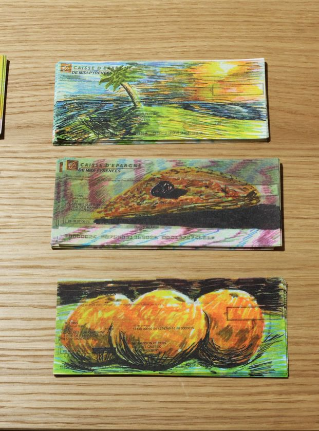
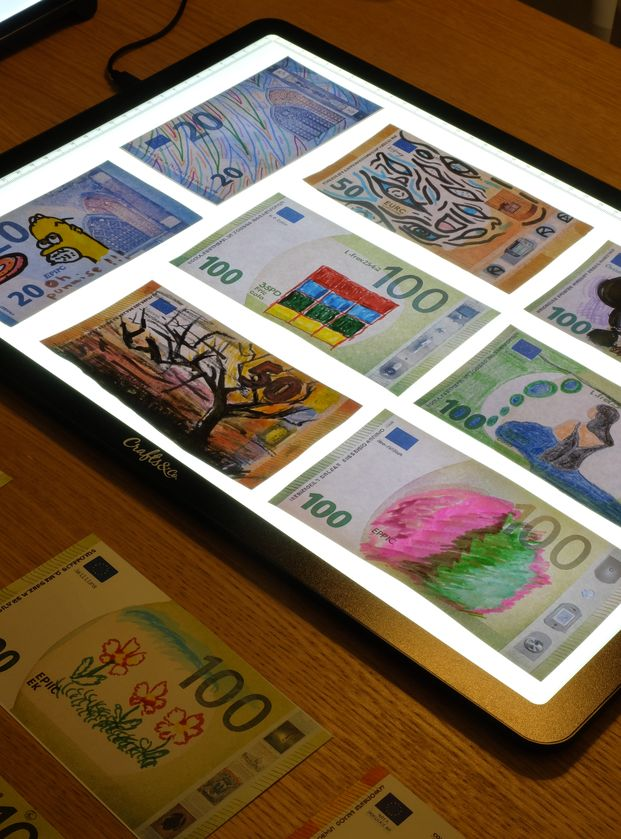
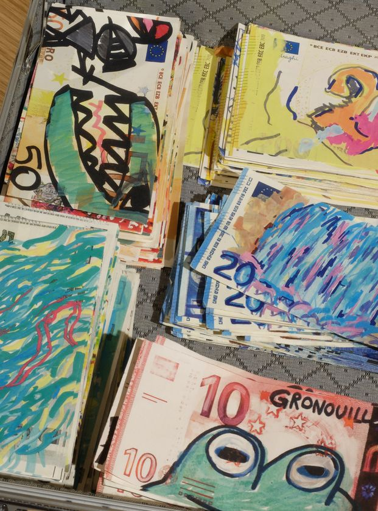
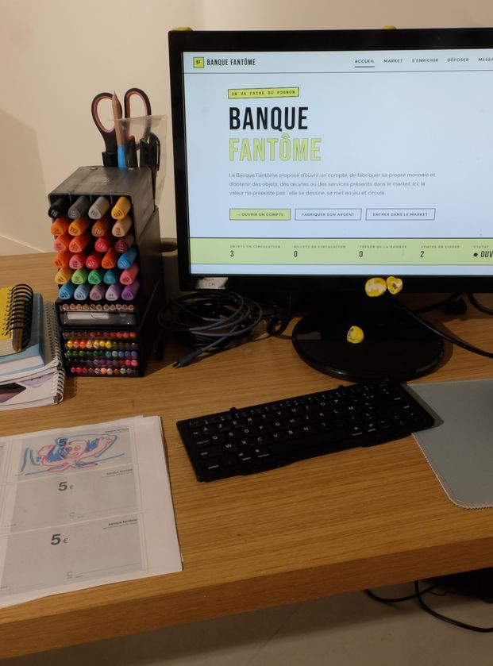
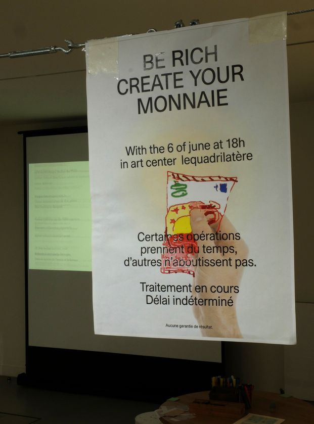
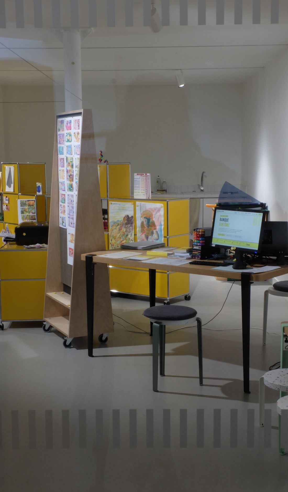
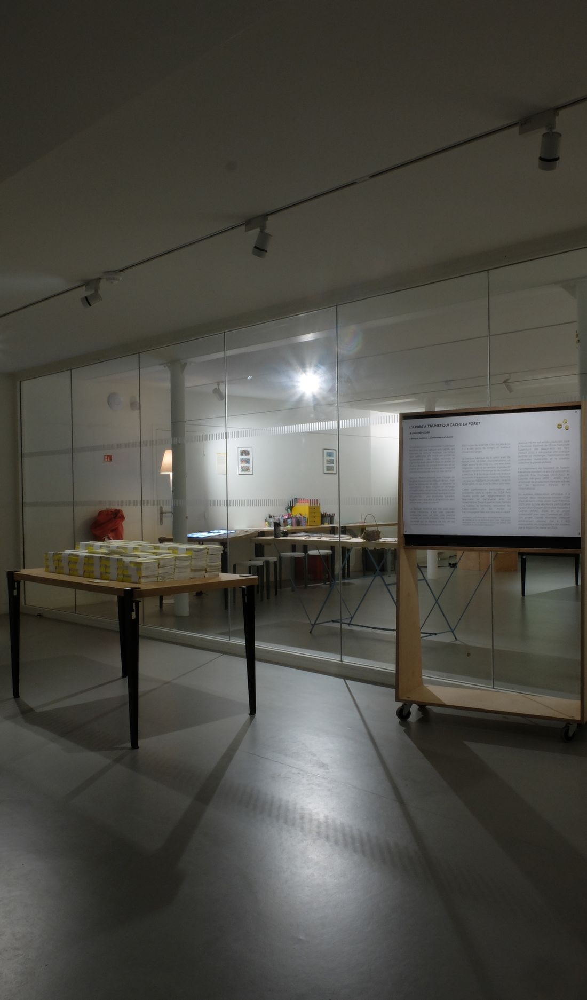
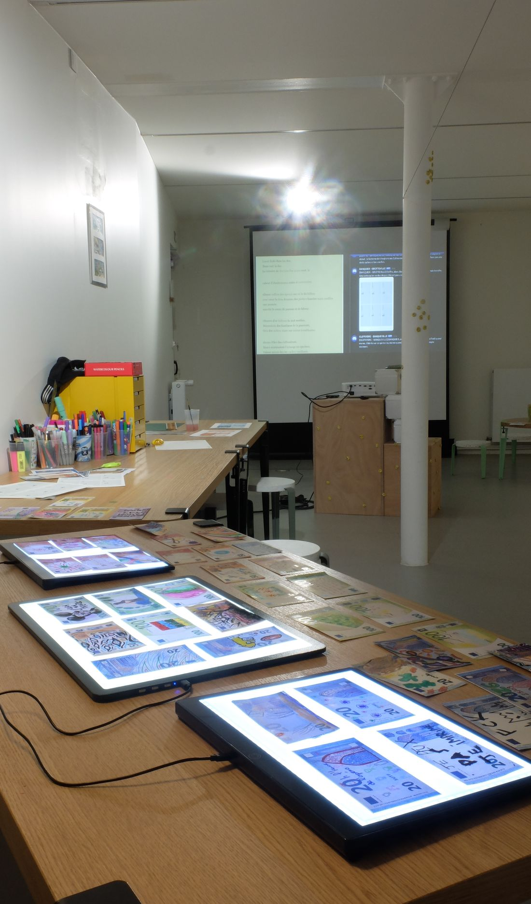
Le magot et les liquidités
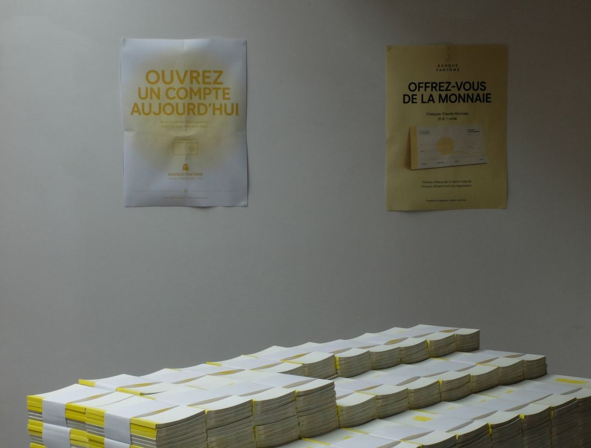
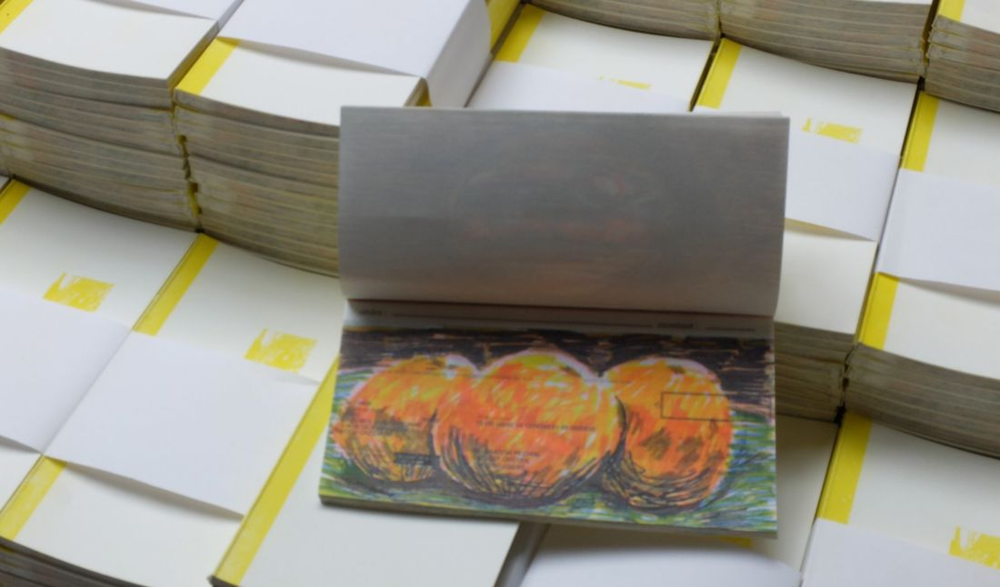
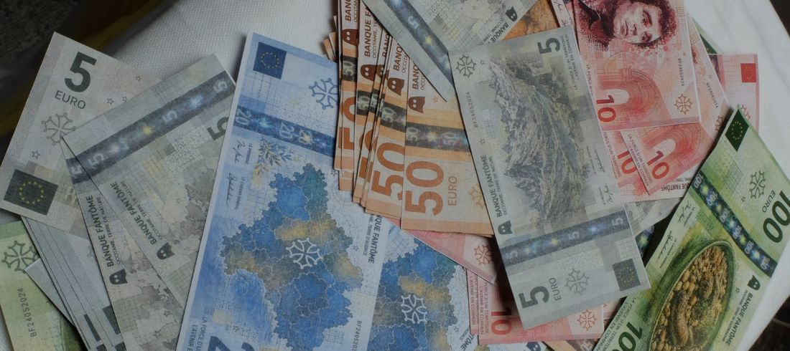
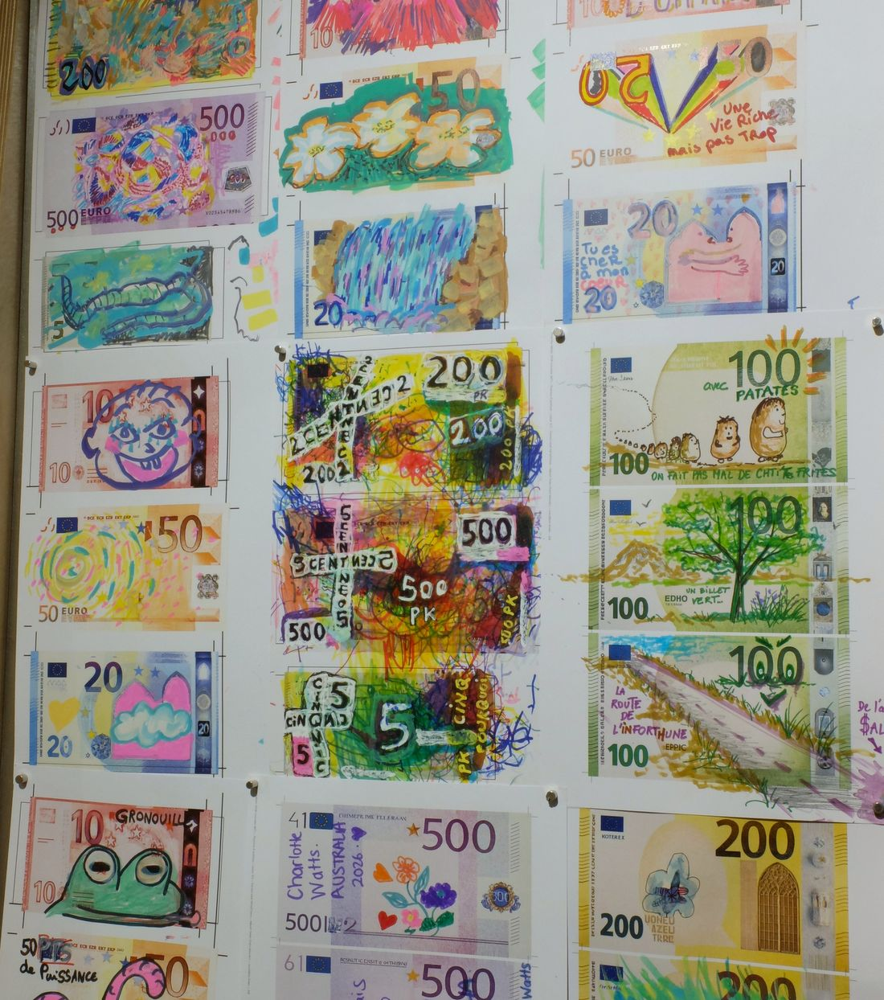
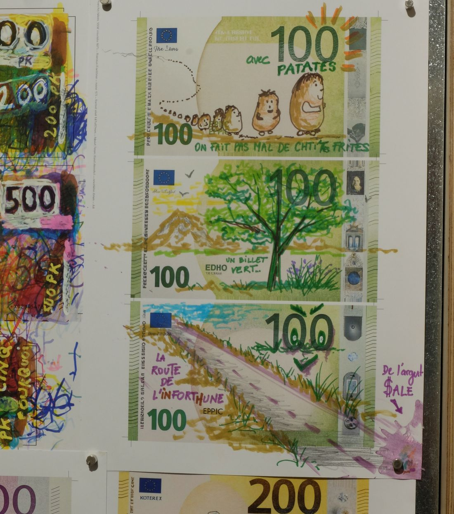
Reconstituer le stock
Un objet fait main
Une petite sculpture, une poterie, un objet bricolé, cousu, sculpté, réparé. Peu importe le niveau : la banque fantôme ne juge pas la technique, elle valorise le geste.
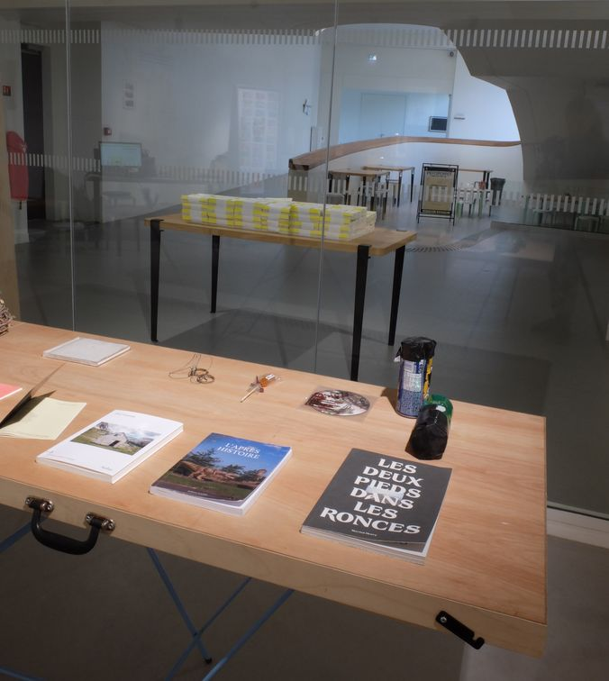
Un vieux dessin
Un dessin d'atelier, une esquisse oubliée dans un tiroir, un travail d'enfant, un croquis de résident·e ou d'usager·ère. Ce qui compte, c'est qu'il ait existé pour quelqu'un.
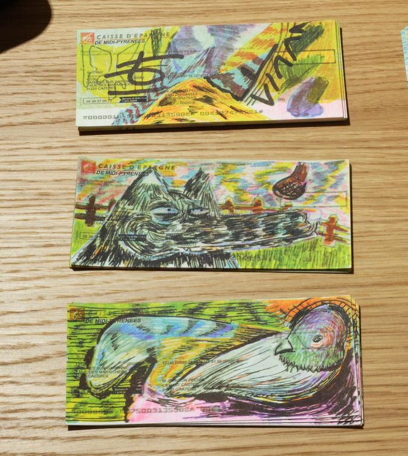
Une valeur étrange
Un objet dont la valeur ne se dit pas facilement en euros : un souvenir, un doublon de collection, un tesson de terre cuite médiéval, une pièce sans usage mais chargée de sens pour celleux qui l'ont fabriquée.
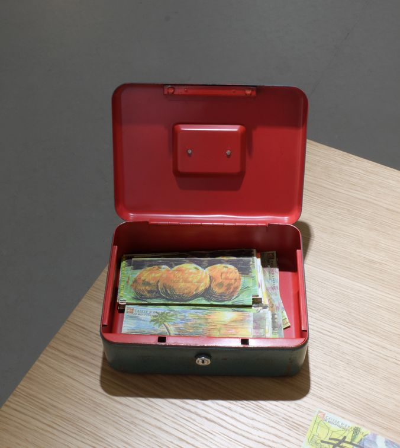
Ce que vous ne savez pas nommer
Vous ne savez pas si ça rentre dans une case ? C'est probablement exactement ce que cherche la banque fantôme. Proposez, on regarde ensemble.
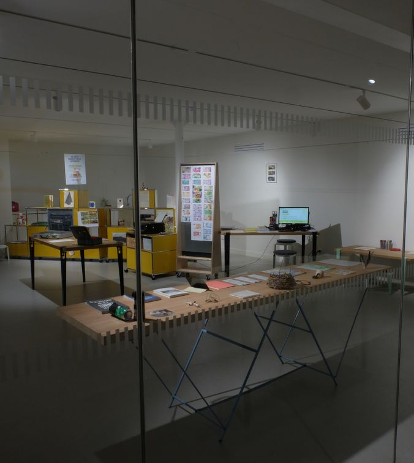
On passe prendre
le café, et l'objet avec
Le plus simple : on en parle directement avec la Communauté d'Agglomération du Beauvaisis, déjà partenaire de la résidence.
Vous pouvez aussi me déposer votre objet en main propre, où que vous soyez dans le Beauvaisis : je me déplace.